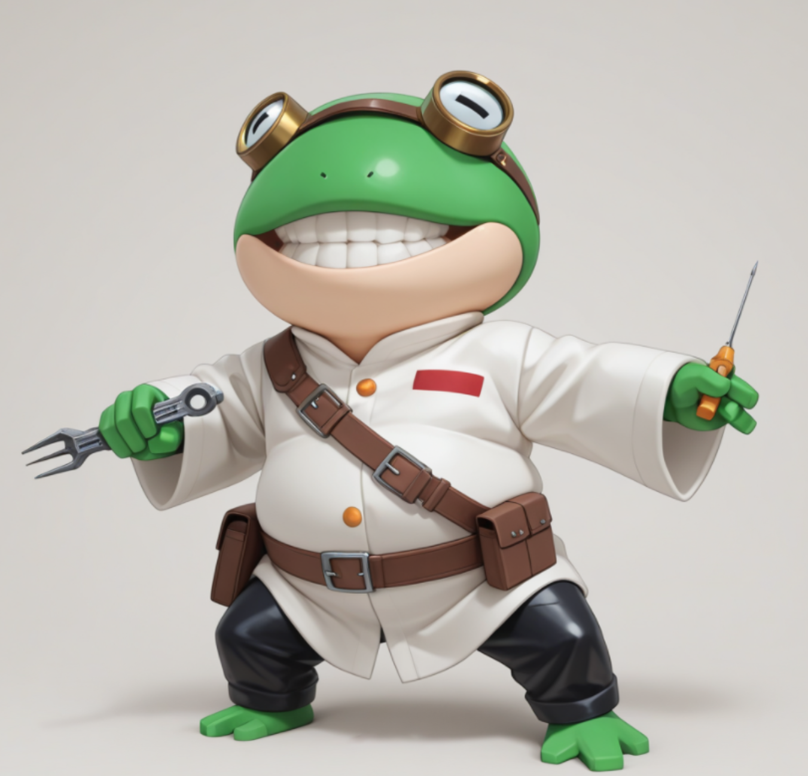
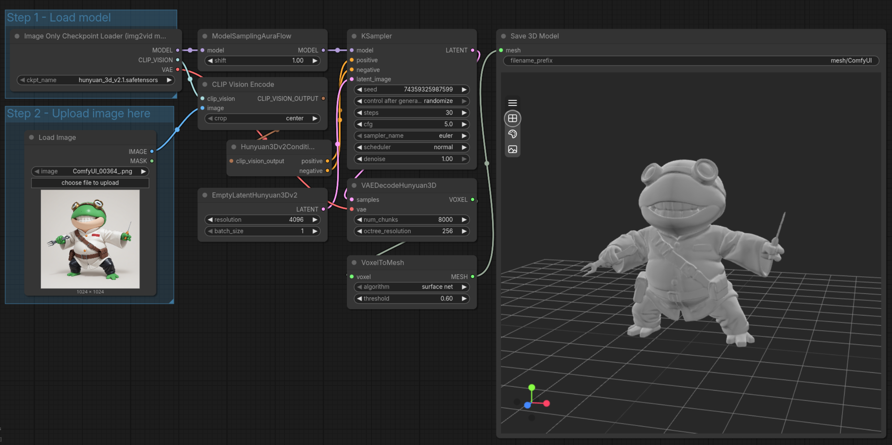
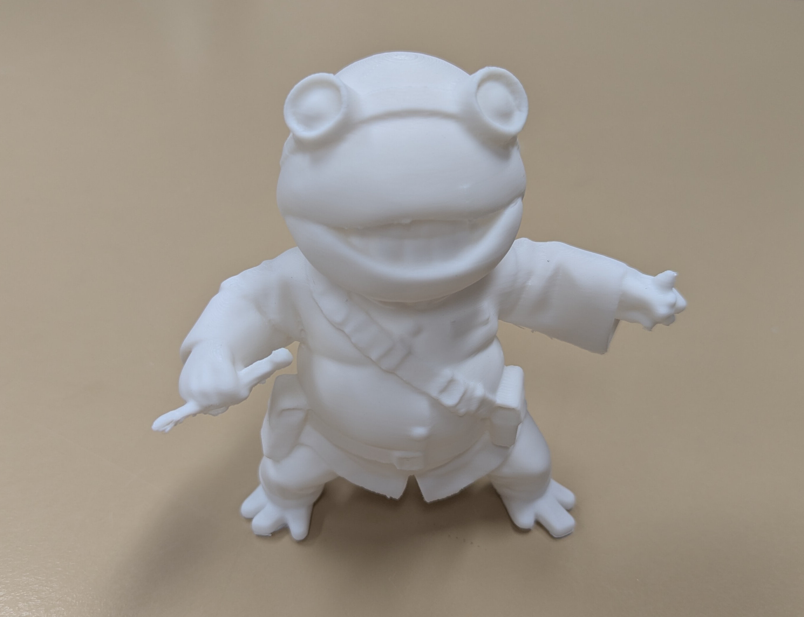

1Die Idee in Worten beschreiben
Eine dicke Kröte im weißen Laborkittel, mit Messingbrille und Werkzeuggürtel …

→

→

2KI malt ein Bild
3KI macht daraus ein 3D-Modell
4Der 3D-Drucker druckt
7 g Kunststoff · 1 h 21 min Druckzeit · komplett auf dem Rechner in unserer Werkstatt